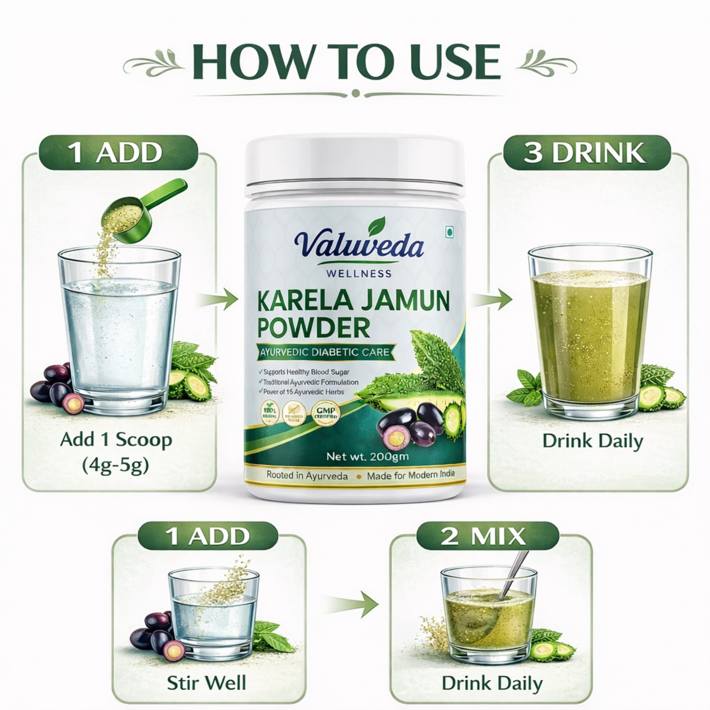

Jamun
Syzygium cuminiA familiar Indian fruit traditionally used in Ayurvedic wellness practices.

A thoughtfully presented herbal wellness formulation made with Karela, Jamun and 15+ Ayurvedic botanicals.
Special offer price on the 200g pack. Product details and directions should always be followed from the actual pack.
*Only use certification/composition claims that match the current product label and approved business documentation.
ValuVeda Karela Jamun Powder brings together Karela, Jamun and a broad selection of Ayurvedic botanicals in one convenient powder formulation.
The product page is intentionally designed as a long-form guide: users can understand what is in the pack, how to use it, what to expect from shipping and where to get help before placing an order.

Explore the ingredients listed for the current product formulation. Traditional/general-wellness descriptions should not be interpreted as disease treatment claims.
A familiar Indian fruit traditionally used in Ayurvedic wellness practices.
A classic botanical widely used in traditional Indian wellness routines.
Aromatic herb traditionally valued in everyday wellness practices.
Traditional Ayurvedic botanical commonly included in wellness formulations.
Traditional Indian botanical used across a range of Ayurvedic preparations.
Traditional botanical associated with classical Ayurvedic formulations.
Well-known Ayurvedic herb traditionally used in wellness routines.
Common culinary and traditional herb used in Indian wellness practices.
Familiar aromatic seed traditionally used in everyday routines.
Traditional Ayurvedic botanical used in herbal formulations.
Traditional Indian botanical known for its fragrant flowers and leaves.
The signature bitter gourd ingredient of this formulation.
A classical Ayurvedic botanical included in many traditional formulations.
A traditional bitter herb used in Indian herbal practices.
An aromatic spice traditionally used in food and wellness routines.
Trust is built through clear product information, responsible communication and an authentic presentation of the product pack.
The product packaging remains the primary product visual rather than an artificial replacement.
The formulation is presented ingredient-by-ingredient so customers can read what is listed.
Shipping and replacement information is available before customers place an order.
Wellness language is used carefully and does not promise a medical cure or guaranteed result.
Follow the approved product label and professional advice where applicable.

Take ½ small teaspoon on an empty stomach with lukewarm water, following the product label.
Take ½ small teaspoon about 30 minutes before dinner with lukewarm water, following the product label.
Jamun, Neem, Tulsi, Ashwagandha, Bael, Vijaysar, Shatavari, Methi, Saunf, Gudmar, Harsingar, Karela, Manjistha, Chirata and Dalchini, as listed for the current formulation.
Net quantity: 200g. The pack is intended for approximately one month at the stated routine; actual duration can vary.
Free shipping PAN India. Normal delivery is 4–7 days. Weather, remote areas and operational conditions can occasionally extend delivery.
Replacement is applicable for eligible damaged, opened/tampered or incorrect deliveries according to the replacement policy. Contact the support team within the stated window with clear evidence.
ValuVeda Karela Jamun Powder is a 200g herbal wellness formulation made with Karela, Jamun and 15+ Ayurvedic botanicals.
You can order through WhatsApp or use the Amazon purchase option.
Normal delivery is 4–7 days, with occasional delays caused by weather or operational conditions.
Yes. Use the WhatsApp or Call buttons to contact ValuVeda directly.
Choose the purchase option that works best for you.